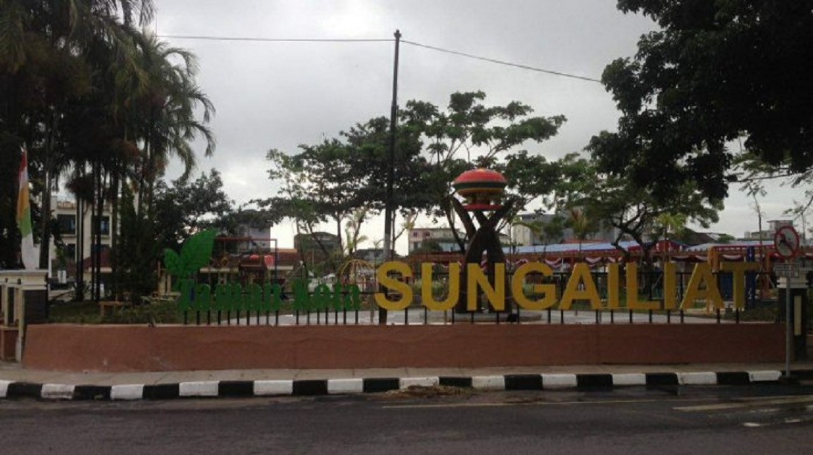
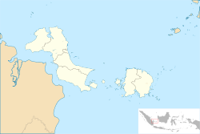
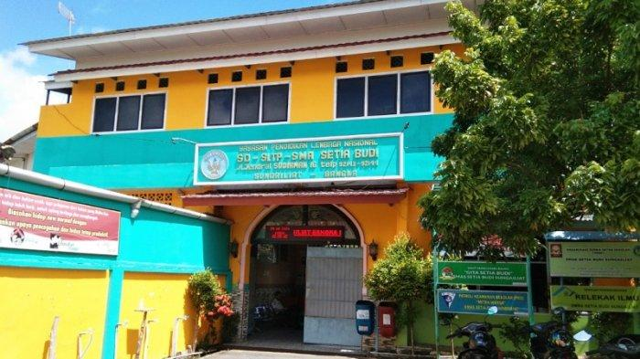

Sejarah

Hari jadi kota Sungailiat ditetapkan oleh rapat tim tanggal 13 Juni 1995 serta hasil seminar lokakarya dan expose tentang hari jadi/ hari lahir Kota Sungailiat oleh Bupati Kepala Daerah Tingkat II Bangka pada tanggal 20 November
1995 dan tanggal 15 Januari 1996 mendapatkan tanggapan melalui media massa, tokoh masyarakat, dan pemuka adat menetapkan bahwa hari jadi Kota Sungailiat jatuh pada tanggal 7 Rabiulawal tahun 1186 H atau tanggal 27 April 1766 M.
Demografi

Masyarakat Sungai Luat dikenal dengan budayanya yang multi kultural. Penduduk asli Sungai Liat pada umumnya sama dengan wilayah lain di provinsi Kepulauan Bangka Belitung, yakni suku Sawang dan Melayu Bangka. Selain itu,
keturunan Tionghoa juga sangat memengaruhi keberagaman Sungai Liat. Kemudian, banyak suku pendatang lainnya seperti suku Jawa, Batak, Minangkabau yang tinggal di kawasan ini, dan beberapa suku lainnya.
Sementara itu, agama yang dianut juga beragam. Berdasarkan data Kementerian Dalam Negeri tahun 2021, adapun persentasi penduduk Sungai Liat menurut agama yang dianut ialah Islam 77,98%, kemudian Buddha 11,47%, Kristen 5,92%
dimana Protestan 4,29% dan Katolik 1,63%. Sebahagian lagi beragama Konghucu yakni 4,18%, Kepercayaan 0,49% dan Hindu 0,01%.
Pendidikan

Untuk pendidikan Sungailiat mempunyai banyak sekolah dari sekolah negeri sampai sekolah swasta. Berdasarkan data Kementerian Pendidikan dan Kebudayaan, ada 127 sekolah di Sungai Liat, dari ringkat TK hingga SMA.Contoh sekolah
negeri dikota ini antara lain adalah SDN 1 Sungailiat, SDN 10 Sungailiat, SDN 15 Sungailiat, SDN 25 Sungailiat, SMPN 1 Sungailiat dan SMPN 2 Sungailiat, SMAN 1 Sungailiat dan SMK N 1 Sungailiat. Sementara contoh sekolah swasta
adalah SD-SMP-SMA Setia Budi Sungailiat.